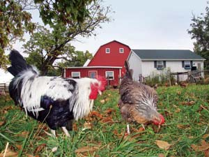
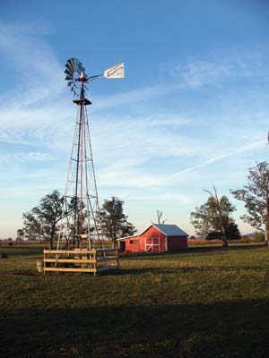
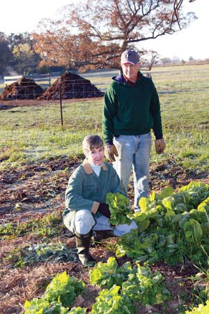
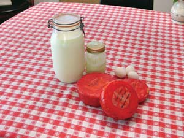
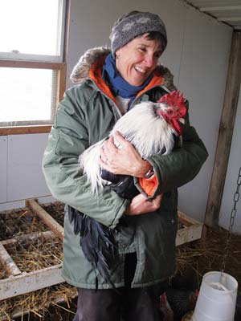
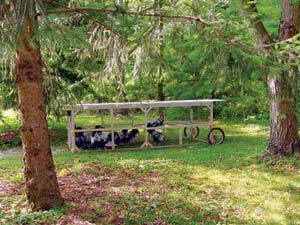
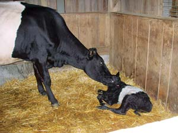
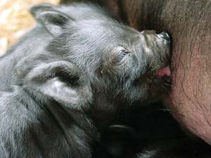
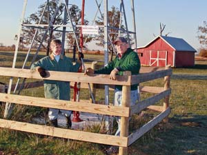

Rare breeds of farm animals have come into our lives in the same serendipitous manner as our farm itself. We’ve discovered perfect heritage breeds for homesteaders - Dorking chickens, Dutch belted cows and Guinea hogs.
My husband, Tom, had been a building contractor who insisted on recycling materials and using superinsulation. I was a family practitioner who emphasized preventive medicine and universal health care. He was discouraged by people’s indifference to conserving energy and materials. I found it difficult to give good care in a system that was becoming more focused on profit than health. Then we bought a 13-acre farm near Washington Courthouse, Ohio. That was almost 11 years ago.
We continued to work at our “real” jobs for the next decade, but the farm offered us a place to be completely true to our values. We poured energy, money and time into restoring our farm’s seven buildings. We nurtured the large vegetable garden and orchard. It wasn’t long before we realized the joy of sharing our experiences with others - and our own enthusiasm grew.
City children came on farm tours and had their first experience of potatoes coming out of the ground and green beans on bushes. We began beekeeping; bees confirm our belief that nature and chemicals are not compatible. Last year we put up a windmill to grace the pasture and to reassure us that we can have water without electricity.
We bought the field adjacent to our meadow with money from selling an old house Tom rebuilt. We turned those 40 acres, which were mono-cropped with heavy machinery and chemicals, into grassland and wetland. In addition to giving refuge to many animals, these acres now help purify water that overflows into the meadow.
Perhaps it was after we purchased the additional land that we stood back and thought, “This place deserves something special!” At any rate, four years ago we read about the American Livestock Breeds Conservancy (ALBC), and our adventures with endangered breeds of poultry and livestock began. We didn’t realize then how much enjoyment awaited us.
I remember looking on the ALBC’s priority list to search for the rarest breeds of chickens. (Visit ALBC to see criteria for the priority list.) I saw Dorking chickens listed, and when we read that Julius Caesar had written about them, I knew they would be worthy of our beautiful, refurbished chicken house.
Genetically endangered breeds seemed like an exotic concept then, but now those Dorkings (see photo above right) make up our backyard flock. The real bonus is that heirloom breeds are easier to raise than hybrid birds because they are “old-fashioned.” They know how to forage for food, hatch eggs and successfully raise their young. In other words, they are largely self-sustaining - a prerequisite for farm animals when homesteading is the goal.
We now take for granted that these chickens supply us with delicious eggs and meat. In contrast to this, hybrid birds are bred for either egg or meat production. We like keeping a breed that provides both, so this dual-purpose breed is just right for us.
Up to this time, only the roosters have been providing meat. We found that both sexes get along fine until about 10 weeks of age, when the males start to fight and act “cocky.” The roosters continue to be compatible if they are separated from the hens. That’s why the cockerels (young roosters) have the homemade “chicken tractor” (see photo in Image Gallery) for their “fraternity house” until about 22 weeks of age, when they are big enough to butcher.
I have a photo of Tom smiling proudly and displaying the first rooster being cooked. That rooster is now a family joke because it was too tough to get our teeth into. But now that we know to bake the chickens longer on low heat, we’re rewarded with succulent, flavorful meat every time. I don’t know why supermarket chickens lack taste and texture. Perhaps it’s because they’re butchered at only seven weeks of age or because they’ve always been confined.
Our chicken tractor is moved to fresh grass daily while remaining in the shady yard. The chickens enjoy being close to the kitchen door because they receive most of the table scraps, garden excesses and whey from cheese making. It’s fun to see them enjoy life. We like having them nearby too, except perhaps when the grazing rotation puts them under our bedroom window with their early morning crowing.
Meanwhile in the back yard, the chicken house and yards are divided in two sections so that Righteous, the silver-gray Dorking rooster, can preside over his half of the hens. Carlos, the colored Dorking rooster, and his harem get the other half. Except for crowing competitions, this seems to preserve harmony at the hen house.
A year after the chickens arrived, we felt we were ready for the next step in our adventure. The big red barn and 11-acre meadow were begging for additions to the three horses and two miniature donkeys that have been our longtime pets. We began (again) with the livestock conservancy’s critical list of endangered cattle. Not knowing much about cows, it was logical I would give priority to good-looking ones, and the black and white Dutch belted cows really caught my fancy. Fortunately, these “Oreo-cookie” cows proved to be a wonderful choice in many ways.
Although it makes me smile now, we didn’t realize that the need for genetic preservation meant there wouldn’t be many of the Dutch belted cows available for our new herd. The critical status means “difficult to find.” In fact, they’re so scarce that “breeding up” milk cows of other breeds with pure Dutch belted bulls is the method used to preserve this old breed. The fifth generation of daughters, which are 96.88 percent “pure,” becomes registered as purebred. We were fortunate to be able to purchase two second-generation, pregnant heifers. These sisters, Addie and Annie, are 75 percent Dutch belted, and have shown all the characteristics this breed is treasured for - and they stop traffic on our little country road because theyhave the wonderful white-belted “Oreo” look!
Some people see our cows and think we have belted Galloways because they have the same black and white appearance, but belted Galloways are beef cattle. Our Dutch belted cows give us both milk and beef. Dual-purpose again serves us well. The first year, both offspring were males, but because they weren’t purebred, they were not valued for breeding. Both were able to stay with their mothers, living on milk and grass while playing in the meadow. They were butchered at nine months of age when they became too big for us to keep. We feel grateful that they could have a good life, and that our freezers are now filled with tasty, nutritious meat. On the rare occasion that we eat other meat, we realize why condiments are popular - confinement beef has no taste! Our grass- and milk-fed beef is incredibly juicy, tender and full of flavor.
Dairy products have become a larger part of our diet. Before we got the cows, I hadn’t thought about what a nutritional benefit fresh milk from grass-fed cows would be. We were focused instead on how to milk a cow, and learned by reading a book. The cows might tell you otherwise, but we think the first milking went reasonably well, and we now consider ourselves old pros.
My biggest surprise has been how generous nature is. The milk from the cows is beautiful and full of flavor. It seems much more like real food than homogenized, pasteurized milk. The Dutch belted milk is not as plentiful nor as high in fat as Jersey milk, and I find the 5 gallons a day (from each cow) a manageable amount. Besides drinking fresh milk, I make yogurt and mozzarella, ricotta and cheddar cheeses. The cheddar is waxed and aged in the root cellar. Like good European cheese, our cheese from raw milk has a wonderful potential for flavor. I have a long way to go on the cheese-making learning curve, but we think the results at this point are wonderful! As with the meat, we are grateful to consume a non-processed food that doesn’t contain hormones or antibiotics.
We’re not the only ones grateful for the milk. In addition to the neighbors, the chickens get a boost in their quota of calcium and protein from milk and its products. And when the calves are weaned, the pigs become our excess milk consumers.
We didn’t realize what a wise investment the Dutch belted cows were when we first got them. We’re now so “wealthy” in meat and milk products that we don’t need further convincing, but we’re learning about their many other assets as we go. They have easy births because of the relatively small size of their calves. The cows will continue to have calves and produce milk through their teens and live to be about 20 years old - much longer than dairy cows confined in large commercial operations.
Here is a lazy confession: These cows are just great if we don’t feel like milking all the time. It’s OK to share their milk with the calves and only milk when we feel like it. We also take a break at least two months before their next births. With cheese in the root cellar, we don’t need to be deprived of milk products during the cows’ dry periods.
The most recent additions to our farm are Bart and Lucky, two Guinea hogs. Their ancestors originally came over on slave ships from West Africa and were treasured by pioneers for their ability to forage for food, keep premises clear of snakes (heritage pigs instinctively kill and eat snakes) and provide meat with lots of lard. Their population fell dramatically during the Civil War, but because of their friendly and intelligent natures, they have survived mainly through petting zoos.
I chuckle because our Guinea hogs remind me of very large piggy banks with their short legs, thick bodies and practically nonexistent necks. But, these piggy banks are completely covered with black hair. The pair is a wonderful addition to our homestead; we value their friendly personalities as well as their ability to consume all excess milk, eggs, orchard fruit and garden produce!
What we are learning while living with our endangered animals is that we’ve been blessed to have livestock that is easy to care for while providing us with nutritious and tasty food. It’s a new concept to me that eating animals helps to preserve them, but it’s obvious that if there is no market for these old breeds their numbers will always remain threatened.
Just as we are preserving heirloom seeds in the garden, helping to preserve heritage animal breeds is important for future generations. That sounds rather grand for all the fun we’re having, but now that we realize how few of these animals remain, we understand the importance of providing a home for them. Their unique characteristics helped our grandparents survive, and may also help our grandchildren.
Eating locally is becoming more important. The timing for this venture seems right, as diminishing oil supplies will make our trucked-in food more expensive. It is important that local animals can provide us with food. And what wonderful food it is! The eggs, milk and meat are much more nutritious than what comes from the grocery store, and don’t include the hormones and antibiotics we want to avoid. It’s too late for us to go back to trucked-in produce - the wonderful taste of this homegrown food has spoiled us forever.
A friend laughed to see our cows frolicking around the compost pile one evening. The animals enjoy living in a way that is natural to them and this gives us immense pleasure, too. When animals are allowed to be outside foraging as nature intended, they stay healthy without antibiotics. In return, we get healthful food to eat. The huge bonus for our planet is that the animals are not contaminating the air and water supplies as is happening with confinement operations. What’s good for us is also good for the animals and the planet. We just didn’t realize that the outcome would be this bountiful and this much fun!
|
 MARY LOU SHAW Heritage breeds of livestock, like this pair of Dorking chickens, make a great addition to a back yard or a place in the country. |
 MARY LOU SHAW The windmill pumps water for livestock, but may pump water for a gravity-fed system in the house some day. |
 RONNIE HAGER The Shaws raise heirloom vegetables in their garden. |
|
 MARY LOU SHAW Milk from the cows provides a bounty of dairy products. |
 JUSTINE SHAW Righteous, the rooster, rules only half the roost. Another rooster, Carlos, rules the other half. |
 MARY LOU SHAW The Dorking cockerels on “pasture” in the chicken tractor. |
|
 MARY LOU SHAW The Dutch belted cattle are a dual-purpose breed; they efficiently produce both milk and meat for the homestead. |
 MARY LOU SHAW Guinea hogs are an endangered breed. |
 |